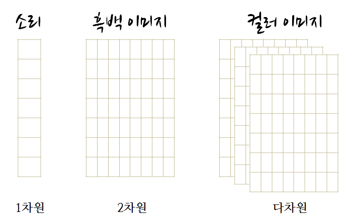

구성 초등학교 소프트웨어 교육
컴퓨터 과학 언플러그드(Computer Science Unplugged) - 자료 구조(Data Structure)
학습 목표
- 가장 기본(Primitives) 자료 구조를 이해한다.
- 과학 컴퓨팅에 사용되는 자료구조를 이해한다.
파이썬 NumPy 라이브러리를 사용할 경우 소리는 1차원, 흑백 이미지는 2차원, 칼러 이미지는 RGB 3차원 등 다차원 배열이 사용된다.

1. 개별 사물(Individual things)
어떤 프로그래밍 언어에서도 가장 기본 구성요소는 변수 혹은 (특별한 경우) 객체로 불리는 “사물(things)”이다.
파이썬에서 가장 흔한 기본 “사물”은 정수, 부동소수점수, 문자열, 부울, 다양한 자료형의 특수 객체가 포함된다. 이번 학습을 진행하면서 이들 모두를 만나볼 것이다.
# 사물(thing)
2
3
4
5
6
7 # print를 사용해서 동일한 셀에 사물 다수를 출력한다.
# 문자열에는 단일 인용부호 혹은 쌍 인용부호를 모두 사용함에 유의힌다.
print(2)
print('hello') 2
hello # 사물을 변수로 저장할 수 있다.
a = 2
b = 'hello'
c = True # 부울의 경우 대소문자 구별한다.
print(a, b, c) (2, 'hello', True) # type 함수를 사용해서 사물의 유형(type)을 확인한다.
print(type(a))
print(int)
print(type(b))
print(str)
print(type(c))
print(bool) <type 'int'>
<type 'int'>
<type 'str'>
<type 'str'>
<type 'bool'>
<type 'bool'> # 신규 변수가 이전 변수를 지칭하면 어떻게 될까?
a = 1
b = a
a = 2
## b 값은?
print b 12. 사물을 조작하는 명령어
변수로 데이터를 저정하는 것만으로 그다지 유용성이 크지 않다. 즉시, 데이터와 변수 연산과 조작을 시작해보자.
사물에 연산을 가하는 매우 일반적인 방법이 세가지 있다.
2.1 연산자(operator) 사용
모든 기본 수학 연산자는 숫자에 대해 동작한다. 문자열같은 다른 사물에도 일부 유용한 연산을 수행한다. 양을 비교해서 결과로 bool 변수를 돌려주는 부울 연산자도 있다.
# 표준 수학 연산자는 기대한대로 숫자에 작동한다.
a = 2
b = 3
print(a + b)
print(a * b)
print(a ** b) # a 에 대한 b 거듭제곱(멱승) (a^b 연산은 완전히 다른 연산(비트 xor)이다!)
print(a / b) # 만약 파이썬 2를 사용한다면 정수 나눗셈에 주의한다. 5
6
8
0 # 문자열에 대한 연산자도 있다.
print('hello' + 'world')
print('hello' * 3)
#print('hello' / 3) # 이렇게는 할 수 없다! helloworld
hellohellohello # 부울 연산자는 두 사물을 비교한다.
a = (1 == 1)
b = (3 == 3)
print(a)
print(b)
print(a or b)
print(a and b)
print(a is b) True
True
True
True
True2.2 함수 사용
어떤 언어로도 프로그래밍을 해본 사람이면 매우 친근할 것이다. 예상한대로 작동한다.
# 사물을 조작하는 수천가지 함수가 있다.
print(type(3))
print(len('hello'))
print(round(3.3)) <type 'int'>
5
3.0비법: 함수가 무엇을 수행하는지 알아내려면, 함수 명칭치고 나서 물음표를 타이핑하면 도움말 윈도우가 짠하고 나타난다. 혹은 함수에 무슨 인자를 받아들이는지 알아내려면, 함수명을 입력하고, 여는 괄호를 하고 탭을 친다.
round?
#round(
round(3.14159, 3) 3.142비법: 유용한 함수 다수가 파이썬 내장 라이브러리에 있지 않고 외부 과학 팩키지에 존재한다. 사용하려면 파이썬 노트북 (혹은 프로그램)으로 가져와야 한다. 아마도 가장 중요한 라이브러리가 numpy 와 matplotlib 이다.
# 유용한 함수 다수가 외부 팩키지에 존재한다.
# numpy를 만나보자.
import numpy as np # 팩키지에 무엇이 있는지 살펴보려면, 명칭과 점을 타이핑하고 탭을 친다.
#np?
np.isfortran? # numpy 함수와 "사물" 예제가 몇개 있다.
print(np.sqrt(4))
print(np.pi) # 함수가 아니고, 단지 변수다.
print(np.sin(np.pi))
print(np.cos(np.pi)) 2.0
3.14159265359
1.22464679915e-16
-1.02.3 메쏘드(method) 사용
파이썬 언어로 좀더 깊이 들어가기 전에, “객체(object)”에 관해서 살펴보자. 이번 워크샵에서 객체지향 프로그래밍(object oriented programming, OOP)을 가르치지 않지만 파이썬을 학습하면서 객체와 마주치게 된다 (사실, 정수(ints)와 문자열(strings) 같은 단순해 보이는 사물도 실제로 파이썬에서는 객체다).
가장 단순한 용어로, 객체를 데이터 그 자체와 해당 데이터를 조작하는 함수를 담고 있는 작은 “사물” 묶음으로 볼 수 있다. 예를 들어, 파이썬 문자열은 문자 집합과 문자집합을 조작하는 다양한 함수를 담고 있는 객체다. 객체로 묶여질 때, 이러한 함수를 “메쏘드(method)”라고 부른다.
“일반적인” 함수(인자)(function(arguments)) 구문 대신에, 변수.메쏘드(인자)(variable.method(arguments)) 구문을 사용해서 메쏘드를 호출한다.
# 문자열은 사실 객체다.
a = 'hello, world'
print(type(a)) <type 'str'> # 객체는 메쏘드 묶음을 갖고 있다.
print(a.find('o'))
print(a.capitalize())
print(a.replace('l', 'X')) 4
Hello, world
heXXo, worXd비법: 전체 파이썬 2 사용자를 위한 한가지 (파이썬 3에서는 바뀌었음), 정수 나눗셈 결과. 상기 변환을 명확하게 동작하게 하려면, 다음 >두가지 중 하나를 취한다:
inches_in_metre = 39.(소수점을 추가해서 부동소수점형으로 자료형변환을 추가하거나, 좀더 정확하게 39.4 을 쓴다.)from __future__ import division- 코드 상단에 놓으면 정상 동작한다.
inches_in_metre = 39
inches = 5*12 + 9.5 # 5 피트 9.5인치
metre = inches / inches_in_metre
print(metre) 1.782051282053. 사물 모음 (Collections of things)
본인 신장을 탐색하는 것도 흥미롭지만, 과학에서는 좀더 복잡한 데이터셋을 갖고 작업한다. 이번 예제에서, 신장의 특징과 분포에 관심있다. 파이썬에는 사물 집합을 다룰 수 있는 객체 다수가 제공된다.
파이썬을 과학에 작업할 때 아마도 99%는 다음 네가지 유형의 모음 중 하나를 사용할 것이다: lists, tuples, dictionaries, numpy arrays. 재빨리 각각을 살펴보고, 이것을 가지고 무엇을 할 것인도 확인해 보자.
3.1 리스트(Lists)
리스트는 아마도 가장 다루기 쉽고 가장 유연하게 자료를 담을 수 있는 용기다.
리스트는 꺾쇠 괄호 [] 로 선언한다.
리스트의 각 요소를 a[ind] 구문으로 선택한다.
# 리스트를 꺾쇠 괄호 구문으로 생성한다.
a = ['blueberry', 'strawberry', 'pineapple']
print(a, type(a)) (['blueberry', 'strawberry', 'pineapple'], <type 'list'>) # 리스트 (그리고 모든 모음) 는 또한 꺾쇠 괄호로 색인된다.
# 유의사항: 첫번째 색인값은 1이 아니고 0이다.
print(a[0])
print(a[1]) blueberry
strawberry ## 리스트 끝에서부터 계수할 수도 있다.
print('last item is:', a[-1])
print('second to last item is:', a[-2]) ('last item is:', 'pineapple')
('second to last item is:', 'strawberry') # 색인 사이에 콜론을 사용해서 슬라이싱(slicing)해서 리스트에서 다수 항목에 접근한다.
# 유의사항: 끝 값은 포함되지 않는다 [0,2)
print('a =', a)
print('get first two:', a[0:2]) ('a =', ['blueberry', 'strawberry', 'pineapple'])
('get first two:', ['blueberry', 'strawberry']) # 만약 필요하면 시작과 끝 색인값을 제외할 수도 있다.
print(a[:2])
print(a[2:])
print(a[:])
print(a[:-1]) ['blueberry', 'strawberry']
['pineapple']
['blueberry', 'strawberry', 'pineapple']
['blueberry', 'strawberry'] # 리스트는 다른 것과 마찬가지로 객체로 `append` 같은 메쏘드를 갖는다.
a.append('banana')
print(a)
a.append([1,2])
print(a)
a.pop()
print(a) ['blueberry', 'strawberry', 'pineapple', 'banana']
['blueberry', 'strawberry', 'pineapple', 'banana', [1, 2]]
['blueberry', 'strawberry', 'pineapple', 'banana']비법: 신규 파이썬 사용자를 위한 팁으로 리스트를 포함한 많은 모임(collections)은 사실 데이터 그자체가 아니라 데이터에 포인터를 저장한다.
b=a로 설정하고 나서 a를 변경한 것을 기억하라?
리스트에 이 작업을 실행하면 어떻게 될까?
도움말: copy 모듈을 살펴보라.
a = 1
b = a
a = 2
## b 값은 무얼까?
print('What is b?', b) a = [1, 2, 3]
b = a
print('original b', b)
a[0] = 42
print('What is b after we change a ?', b)
print(a) ('What is b?', 1)
('original b', [1, 2, 3])
('What is b after we change a ?', [42, 2, 3])
[42, 2, 3]3.2 튜플(Tuples)
튜플에 대해서는 그다지 많이 논의하지 않을 것이다. 다음 두가지 예외사항을 제외하고 튜플은 리스트처럼 작동한다:
- [] 대신에 () 을 사용해서 튜플을 선언한다.
- 튜플을 갖게 되면, 튜플 내부 요소를 변경할 수 없다. 이를 불변(immutable)이라고 부른다.
파이썬 언어를 사용하면 튜플이 나오는 것을 보게 되고, 시간이 흐르면서 언제 튜플을 사용할지에 대한 감이 생기게 된다.
일반적으로, 리스트 대신에 튜플을 사용하는 경우는 다음과 같다:
- coord = (x,y) 처럼 모임(collection)에 위치정보가 극도로 중요할 때 항목을 무리지을 때.
- 예를 들어 shape = (12,23) 처럼, 항목 정보를 우연히 혹은 실수로 변경하지 못하게 만들 때.
xy = (23, 45)
print(xy[0])
xy[0] = "this won't work with a tuple" 23
---------------------------------------------------------------------------
TypeError Traceback (most recent call last)
<ipython-input-11-c7b77af2676f> in <module>()
1 xy = (23, 45)
2 print(xy[0])
----> 3 xy[0] = "this won't work with a tuple"
TypeError: 'tuple' object does not support item assignment역추적(traceback) 오류 해부
코드로 의도하지 않은 무언가를 실행할 때 역추적 오류가 발생(raised)한다. 도움이 되는 정보를 제공할 때도 있지만, 다른 많은 것처럼 항상 > 개발자가 원하는만큼 도움되는 정보를 주지는 못한다.
상기 오류를 살펴보자:
TypeError Traceback (most recent call last)
<ipython-input-25-4d15943dd557> in <module>()
1 xy = (23, 45)
2 xy[0]
----> 3 xy[0] = 'this wont work with a tuple'
TypeError: 'tuple' object does not support item assignment- 실행하려는 명령어가 TypeError (자료형 오류)를 발생시켰다. Type(자료형)이 지원하지 않는 방식으로 변수를 사용했다고 > 제시하고 있다.
- 화살표
---->는 오류 발생지점을 가르킨다. 이 경우에 위에서부터 코드 3번째 줄에서 오류가 발생했다. - 역추적 오류를 읽는 방법을 배운 것이 배양해야될 중요한 기술이고, 코드에 잘못된 것에 관해 어떤 질문을 해야하는지 도움을 준다.
3.3 딕셔너리 (Dictionaries)
모임(collection)에 위치정보 대신에 명칭(혹은 다른 유형의 키)으로 사물을 저장하고 불려올 때 딕셔너리를 사용한다. 좋은 예제가 모형 매개변수 집합으로 각각은 명칭과 값이 있다. 딕셔너리는 {}을 사용해서 선언한다.
# 모형 매개변수 딕셔너리 생성
convertors = {'inches_in_feet' : 12,
'inches_in_metre' : 39}
print(convertors)
print(convertors['inches_in_feet'])
print(convertors['inches_in_metre']) {'inches_in_metre': 39, 'inches_in_feet': 12}
12
39 ## 신규 키:값(key:value) 짝을 추가한다.
convertors['metres_in_mile'] = 1609.34
print(convertors) {'inches_in_metre': 39, 'inches_in_feet': 12, 'metres_in_mile': 1609.34} # 키(KEY) 오류 발생
print(convertors['blueberry']) ---------------------------------------------------------------------------
KeyError Traceback (most recent call last)
<ipython-input-14-4c559e44e688> in <module>()
1 # 키(KEY) 오류 발생
----> 2 print(convertors['blueberry'])
KeyError: 'blueberry'3.4 Numpy 배열 (ndarrays)
numpy(넘파이) 배열 (n-차원 배열로 ndarrays로 종종 쓰여짐) 은 파이썬 핵심 라이브러리 일부는 아니지만, 과학 파이썬에 유용해서 이번 핵심 수업에 포함했다. Numpy 배열은 사물 모임으로 동일한 자료형이여만 된다. (지금까지 기술했듯이) 리스트와 유사하게 동작한다. 가장 중요한 것은 다음과 같다:
- 배열에 쉽게 요소별 연산(elementwise operations)과 행렬 대수(matrix algebra) 작업을 수행할 수 있다.
- 배열은 n-차원이 될 수 있다.
- 배열을 연결(concatenate)시킬 수 있지만, 덧붙이기(append)에 상응하는 것은 없다.
배열은 리스크같은 기존 모임(collections)에서 생성할 수 있다. 혹은 몇가지 방식으로 맨땅에서 인스턴스화(instantiation)할 수 있다.
과학 파이썬을 시작할 때, 아마도 언제든 가능하게 ndarrays 배열을 사용하고, 다른 자료형 모임은 특별히 사용할 이유가 있을 때 저장했다가 사용한다.
# numpy 라이브러리를 가져와서 접근한다.
# 라이브러리에 별명(alias)를 생성한다. numpy 에서 흔히 보게 된다.
import numpy as np
# 리스트에서 배열을 생성한다.
alist = [2, 3, 4]
blist = [5, 6, 7]
a = np.array(alist)
b = np.array(blist)
print(a, type(a))
print(b, type(b)) (array([2, 3, 4]), <type 'numpy.ndarray'>)
(array([5, 6, 7]), <type 'numpy.ndarray'>) # 배열에 산술 연산한다.
print(a**2)
print(np.sin(a))
print(a * b)
print(a.dot(b), np.dot(a, b)) [ 4 9 16]
[ 0.90929743 0.14112001 -0.7568025 ]
[10 18 28]
(56, 56) # 부울 연산자는 배열에도 작동하고, 부울 배열을 반환한다.
print(a)
print(b)
print(a > 2)
print(b == 6)
c = a > 2
print(c)
print(type(c))
print(c.dtype) [2 3 4]
[5 6 7]
[False True True]
[False True False]
[False True True]
<type 'numpy.ndarray'>
bool # 배열 색인
print(a[0:2])
c = np.random.rand(3,3)
print(c)
print('\n')
print(c[1:3,0:2])
c[0,:] = a
print('\n')
print(c) [2 3]
[[ 0.59077018 0.31458423 0.13680323]
[ 0.13291322 0.40832062 0.67107557]
[ 0.70846039 0.86910307 0.24621972]]
[[ 0.13291322 0.40832062]
[ 0.70846039 0.86910307]]
[[ 2. 3. 4. ]
[ 0.13291322 0.40832062 0.67107557]
[ 0.70846039 0.86910307 0.24621972]] # 배열을 다른 부울 배열로 색인할 수도 있다.
print(a)
print(b)
print(a > 2)
print(a[a > 2])
print(b[a > 2])
b[a == 3] = 77
print(b) [2 3 4]
[5 6 7]
[False True True]
[3 4]
[6 7]
[ 5 77 7] # ndarrays은 메쏘드 말고도 속성을 갖는다.
#c.
print(c)
print(c.shape)
print(c.prod())
c.prod? [False True True]
(3,)
0 # 배열을 모두 0 혹은 1 로 채우는 손쉬운 방법이 있다.
print(np.zeros(5), '\n')
print(np.ones(5), '\n')
print(np.identity(5), '\n') (array([ 0., 0., 0., 0., 0.]), '\n')
(array([ 1., 1., 1., 1., 1.]), '\n')
(array([[ 1., 0., 0., 0., 0.],
[ 0., 1., 0., 0., 0.],
[ 0., 0., 1., 0., 0.],
[ 0., 0., 0., 1., 0.],
[ 0., 0., 0., 0., 1.]]), '\n') # 숫자 수열로 배열을 쉽게 만들 수 있다.
print(np.arange(0, 10, 2)) [0 2 4 6 8]